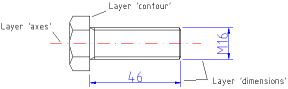
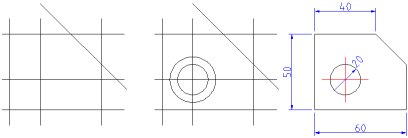
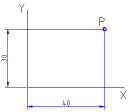
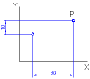
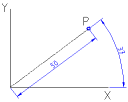
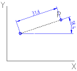

|
||
 |
||


3 Basic CAD Concepts
This chapter is intended to introduce you into the basic concepts of a CAD system. If you're used to working with CAD system you might want to skip this chapter. Please note that the concepts mentioned in this chapter are all later described in detail.
Entities
Entities are graphical objects in a CAD system. Typical entities which are supported by most CAD systems are: points, lines and circular and elliptical arcs. More complex and CAD specific entities include polylines, texts, dimensioning, hatches and splines.
Attributes
Every entity has certain attributes such as its color, line type and line width.
Layers
A basic concept of computer aided drafting is the use of layers to organize a drawing. Every entity of a drawing is on exactly one layer and a layer can contain lots of entities. Typically entities with a common 'function' or common attributes are put on the same layer. E.g. you might want to put all axes in a drawing on a layer named 'axes' (see Figure 1). Layers can have attributes (color, line width, line style). Each entity can have its own attributes or have its attributes defined by the layer it is placed on. In the latter case you can change for example the color of all 'axes' entities by changing the color of the layer 'axes'.
In manual drafting, a similar approach was used. Different building systems, such as wiring and air conditioning were often drawn on separate transparent sheet of paper. These sheets were then overlaid on one another to produce final drawings.

Figure 1: Example use of layers.
Blocks
A Block is a group of entities. Blocks can be inserted into the same graphic more than once with different Attributes and different locations, scaling factors and rotation angles (see Figure 2). Such an instance of a block is usually called an Insert. Inserts have attributes just like entities and layers. An Entity that is part of an Insert can have its own attributes or share the attributes of the Insert. Once created, Inserts are still linked to the Block they instantiate. The power of inserts is, that you can modify the Block once and all Inserts will be updated accordingly.
Figure 2: Three instances (Inserts) of a Block with different colors, angles and scalings.
Drafting in CAD
In many ways, CAD is similar to traditional drafting. When drawing a plan or a view of an object on a paper, you would use tools such as a ruler to draw lines. In CAD systems there is a variety of tools available to achieve the same goal. The big advantage of a CAD system is the fact that you can change every entity of your drawing easily after you've created it. This might be the most difficult thing to learn when moving from paper to CAD. When working with a CAD system you will very often create lines that won't be on the final printout or which don't have the correct length and need to be trimmed later (see Figure 3). A common mistake of CAD beginners is wanting to create the final drawing right away.

Figure 3: Three possible steps to quickly create a drawing using supportive constructions and the ability of a CAD system to change existing entities.
Co-ordinate Systems
A good understanding of how co-ordinates work is absolutely crucial if you are to make the best use of any CAD program. If you're not familiar with co-ordinates it's highly recommended that you take some time to familiarize yourself with the basic concepts.
Origin
The origin of the drawing is the point where the X and Y axis cross each other. It's the absolute zero of the drawing. In addition to the origin there's a relative zero point in QCad. This is a helpful spot that changes it's position depending on the current user interactions. The relative zero point can also be moved around by the user.
Cartesian Co-ordinates
(named after the French philosopher René Descartes 1596-1650)
The Cartesian co-ordinate system is the standard co-ordinate system where the position of a point can be described by its distance from two axes, X and Y. Cartesian co-ordinates in QCad are written in the format:
x-ordinate,y-ordinate
where x-ordinate can be a number such as 2.5 or a mathematical
expression like cos(30)/2 (see
Mathematical Expressions).

Figure 4: Absolute
Cartesian Co-ordinates
40,30
.
Cartesian co-ordinates can also originate in a position different from the origin. In that case we talk about 'relative co-ordinates'. In QCad, relative Cartesian co-ordinates are written in the format:
@x-ordinate,y-ordinate

Figure 5: Relative
Cartesian Co-ordinates @
30,10
.
Polar Co-ordinates
Polar co-ordinates use a distance and an angle to describe the position of a point. In QCad, polar co-ordinates are noted in the format:
distance<angle

Figure 6: Absolute
Polar Co-ordinates
50<37
.
Just like Cartesian co-ordinates, polar co-ordinates can also originate in a position different from the origin. In QCad, relative polar co-ordinates are written in the format:
@distance<angle

Figure 7: Relative
Polar Co-ordinates
@31.6<18.4
.
Object and Grid Snapping
Whenever you need to specify a co-ordinate in QCad, you can use the snap feature which allows you to precisely select grid points or significant points on existing objects: endpoints or midpoints of lines, etc.
The chapter "Object Snap" gives you an overview over all snap tools.
Basic Editing
Entities can be inserted, selected, and, once selected, can be deleted, transformed or duplicated. To insert an entity means to draw it by selecting the appropriate drawing tool, such as line, arc, etc., and by locating points that define the object to be drawn, such as the endpoints of a line.
The chapter "Entity Drawing Commands" lists all tools for adding new entities to a drawing.
Entity Selection
An entity must be selected before it can be deleted, duplicated, or transformed. Entity selection is one of the most basic of CAD operations. QCad offers a wide variety of selection tools to quickly select groups of entities, entities within a range, connected entities, etc.
The chapter "Entity Selection" introduces you into the selection tools of QCad.
Deletion
Deleting an entity means to remove it from the drawing.
Modifications
Basic modifications of a CAD systems include translation, rotation, reflection, and scaling. As well as these operations which don't alter the characteristic geometry of selected entities, there are some that do. You can break, trim, extend or stretch existing entities.
The chapter "Modification" lists and describes all tools for modifying and deleting entities.
Viewing in CAD
Unlike in manual drafting, there is no need in CAD to determine in advance the sheet size and drawing scale. There is no drawing scale: all sizes and distances are specified using their full-scale values. A 10 meter object is drawn as a 10 meter object. Only at the printing stage, the drawing scale needs to be determined based on sheet size and drawing size.
On the screen, the user can adjust the currently visible area of the drawing by zooming in to view more detail or zooming out to view a wider extent. Another important viewing operation in CAD is panning. To see another portion of the drawing without changing the display scale, a user pans to it by "moving" a rectangular display window until it's over the desired spot.
Chapter "Viewing" is all about zooming and viewing functions.
|